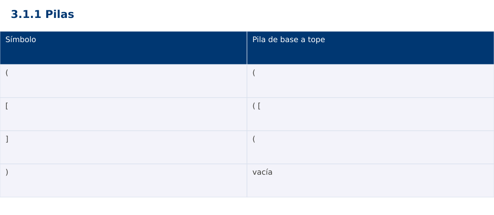

Estructura de Datos
3.1.1 Pilas · Python
Ing. Pablo Torres, Mgtr. · Universidad Politécnica Salesiana · Computación · Cuenca
Unidad 3: Estructura de Datos y Grafos
Índice del curso · Presentación Java · Evaluación Moodle
1. Conceptos y ejemplos
Prerrequisitos: variables, condiciones, bucles, funciones y arreglos. Revisa las estructuras lineales antes de este contenido.
1.1 Tipo abstracto LIFO
Una pila permite insertar y retirar por un mismo extremo, llamado tope. El último valor insertado es el primero que sale. push agrega, pop extrae y peek consulta sin eliminar. La estructura abstracta define comportamiento; un arreglo dinámico o nodos enlazados son implementaciones posibles. Una pila vacía no tiene tope: el contrato debe definir error o valor ausente.
1.2 Representación y operaciones
Una pila enlazada conserva una referencia al primer nodo. push crea un nodo cuyo siguiente es el antiguo tope, y pop guarda el dato antes de avanzar al siguiente. Ambas operaciones cuestan Θ(1). Con arreglo dinámico, insertar al final cuesta O(1) amortizado y una expansión puede costar Θ(n). Retirar al final no necesita desplazar todos los elementos.
1.3 Validación de delimitadores
Al leer un delimitador de apertura se apila. Al leer un cierre debe existir una apertura y su tipo debe coincidir. Al terminar, la pila debe quedar vacía. No basta comparar cantidades: ([)] tiene tantos cierres como aperturas y aun así está mal anidado. La pila contiene exactamente las aperturas todavía no cerradas en orden de anidamiento.
1.4 Bibliotecas y errores
En Java se prefiere Deque con ArrayDeque para esta demostración; pop en vacío lanza excepción y peek devuelve null. ArrayDeque no acepta null. Python list permite append y pop al final, y pop en vacío lanza IndexError. JavaScript Array.pop devuelve undefined en vacío: debe verificarse explícitamente el tamaño para no confundir ausencia con un dato. El algoritmo valida antes de extraer y descarta caracteres que no sean delimitadores.
Traza de referencia
| Símbolo | Pila de base a tope |
|---|---|
| ( | ( |
| [ | ( [ |
| ] | ( |
| ) | vacía |
La tabla muestra estados o conteos concretos. Reproduce cada transición y comprueba qué propiedad permanece verdadera. Una traza finita ayuda a encontrar errores; la justificación del algoritmo también exige explicar por qué progresa y por qué la condición final satisface el contrato.

Particularidades de Python
Python usa indentación para delimitar bloques y enteros de precisión arbitraria. // realiza división entera para índices no negativos. list.copy() crea una copia superficial; las listas y diccionarios mutables pueden compartirse mediante referencias. Las funciones de esta demostración reciben los tipos descritos en el contrato. Los assert son comprobaciones de desarrollo y deben ejecutarse sin la opción -O. No se requieren paquetes externos.
2. Demostración guiada
Problema y contrato: Texto no nulo. Considera (), [] y {}, e ignora otros caracteres. Cadena vacía válida. Retorna falso ante cierre sin apertura o tipo incompatible.
- Lee el contrato y predice la salida del caso principal antes de ejecutar.
- Identifica las variables que representan el estado y vincúlalas con la traza de la sección anterior.
- Ejecuta el archivo completo. Las comprobaciones internas detienen el programa si una condición esperada falla.
- Cambia una entrada del bloque de ejecución, predice el resultado y contrástalo. Conserva el núcleo de la demostración como referencia.
Código completo
Este bloque se genera desde ejemplos/demo.py mediante scripts/sync-code.py; ese archivo es la fuente del código. La PC tiene otro objetivo y sus casos de aceptación aparecen en la sección 3.
def balanced(text):
stack = []
pairs = {')':'(', ']':'[', '}':'{'}
for c in text:
if c in '([{':
stack.append(c)
elif c in pairs:
if not stack or stack.pop() != pairs[c]:
return False
return not stack
if __name__ == "__main__":
for text, expected in [('([])',True), ('([)]',False), ('',True), ('(',False)]:
assert balanced(text) == expected
print('valido' if balanced(text) else 'invalido')
Ejecución
Desde esta carpeta 03-data-structures/3.1.1-stacks/python:
python3 ejemplos/demo.py
Salida esperada de la demostración
valido
invalido
valido
invalido
La salida procede de los datos fijos del bloque de ejecución. Las verificaciones internas también cubren los casos adicionales que se leen en el código. El registro de ejecuciones realizadas se conserva en verificación, separado de estas expectativas.
3. PC — 3.1.1: Pilas
Implementa un historial de acciones con dos pilas: deshacer y rehacer. Ejecutar una acción nueva debe vaciar rehacer. Define el comportamiento de operaciones vacías y conserva el estado al rechazarlas.
Requisitos de la entrega
- Implementa la actividad en una versión, a tu elección entre Java, Python y JavaScript. Las PL se entregan exclusivamente en Java.
- Separa la lógica del procesamiento de la entrada y la impresión. Documenta tipos, dominio válido, salida y comportamiento de error.
- Conserva los casos de aceptación siguientes y agrega al menos un caso que compruebe el invariante del tema.
- No copies como solución el bloque de demostración: resuelve la ampliación pedida. No se suministra una solución completa de esta PC.
Casos de aceptación de la PC
| Entrada o escenario | Resultado exigido |
|---|---|
| ejecutar A, B; deshacer | estado A; B disponible para rehacer |
| deshacer; ejecutar C | rehacer queda vacío |
| deshacer en historial vacío | mensaje de operación no disponible |
Ejecución y evidencia
Desde la carpeta de tu entrega, ejecuta el programa con python3 main.py. Si divides Java en paquetes, utiliza los comandos de la plantilla del estudiante. Registra entrada, resultado esperado, resultado real y explicación de cualquier diferencia en evidencias/PC3.1.1.md de tu repositorio personal.
Crea commits pequeños: feat(pc3.1.1): implementar contrato, test(pc3.1.1): cubrir casos limite y docs(pc3.1.1): explicar costos. Sustituye los mensajes por descripciones del cambio real. Obtén el hash con git rev-parse HEAD y revisa una etapa con git show HASH. La actividad no necesita continuar un proyecto acumulativo.
Lo esencial
- Una pila permite insertar y retirar por un mismo extremo, llamado tope.
- En Java se prefiere Deque con ArrayDeque para esta demostración; pop en vacío lanza excepción y peek devuelve null.
- Explica el contrato, traza una entrada y justifica tiempo y memoria con las condiciones descritas.
Referencias
- Programa analítico y referencias del docente: correspondencia en el documento docente de este contenido.
- Referencia técnica de Python.
- Bibliografía y análisis de fuentes.